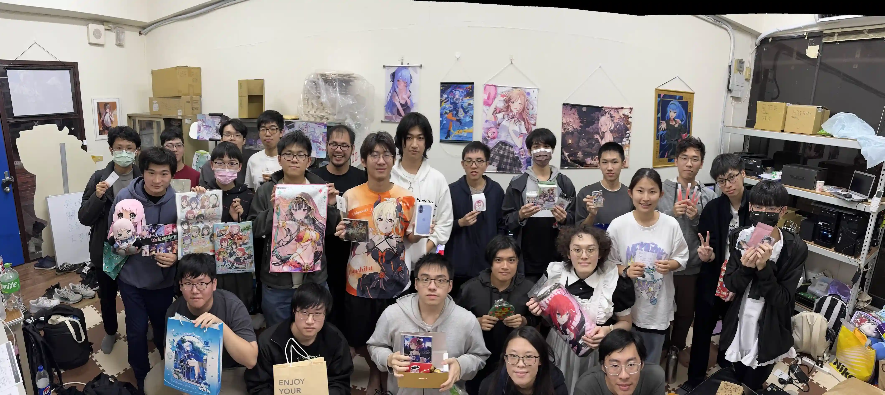
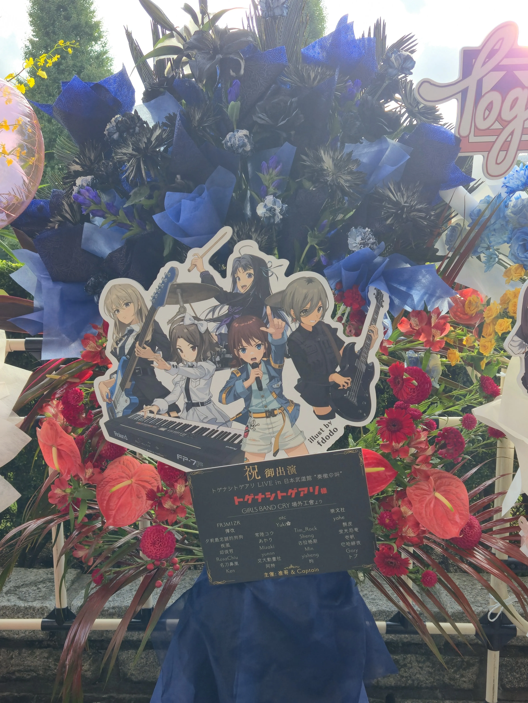

Gallery
活動剪影
點開圖片可檢視全圖及活動介紹。



社團贊助花籃


Activity
Appreciation
從分鏡畫面、鏡頭語言、到音樂編曲、幕後製作，深挖經典作品，不只是愛好，更培養動畫鑑賞的品味。
Exchange
每周邀請不同講者分享各自深入研究的領域，並不定期舉辦動畫放映與討論，促進社內交流風氣。
Creation
每年創作社刊，以文字或繪圖呈現動畫相關主題，鼓勵社員不只被動觀看動畫，也能主動創作與分享。
Topics
推坑社課
集合三位社員過去在動畫社分享過的精采內容，在一堂課的有限時間內，向各位介紹《LoveLive!》這個歷經十五年，曾經盛極一時、為ACGN領域留下深遠影響的IP。
動畫幕後
動畫的製作流程可以說被分工到了極致。原畫、作畫監督、上色、攝影……你或許好奇每個職位具體的工作內容是什麼，以及為什麼需要這樣的分工？這種分工有哪些優點和缺點呢？
MAD 簡介
MAD，作為交大動畫社神聖不可分割的一部分，同時也是本社可以苟活在學藝性社團這個分類下的理由。
本社課將簡單介紹 MAD 的發展歷程以及製作工具，讓有興趣卻不知道怎麼開始的人掌握基本技巧。
現地文化
這堂社課我們彙整了所有參加日本現地演唱會需要做的所有準備，包含抽選流程、付款方式、取票流程及其他需要注意的事項，希望能幫助你順利踏出參加現地活動的第一步。
演出分析
監督山田尚子用幾近偏執的鏡頭語言，將兩位少女的焦慮與依戀，拆解成無數個細碎的眼神與肢體動作。我們將跳脫單純的劇情討論，示範如何從鏡頭與聲音的細節切入，帶領大家看見那些沒說出口、卻震耳欲聾的深層隱喻。
Gallery
Officers
社長
資工 117
GPA 似乎起死回生（？）的資工系大二生，或許是百合廚。
喜歡雜食性的聽音樂，只要對到電波的各種曲風都聽。
是一位刀克塔，然後是拉普蘭德小姐的狗，汪。
副社長
電物 118
18 歲，是個電物系學生。
ANON TOKYO 忠實粉絲，菜菜舞萌低差玩家。
喜歡帶著鬼娃到處跑，要是沒有鬼娃的話，瓦塔西…
被 GPA 追殺的電機系大三生，最喜歡的是花田的魔法。
看完 GBC 才被震撼到學會衝演唱會，果然現地只有零次跟無限次。
還有，我真的不是中島由貴的狗，請不要這麼叫我。我是她養的小文鳥。
Contact Us
Discord
入社後將獲邀加入專屬 Discord 伺服器
Location
社辦位置：學生活動中心 5F 527 室
開放時間：每日 10:00 ~ 22:00
透過粉專聯繫社團幹部
請至 Facebook 粉專私訊，我們將盡快回覆！
於社辦或活動攤位上繳交社費
社費涵蓋學期課程與活動參與。
於交大單一入口網登記成為社員
完成校方正式登記程序，非具有交大學籍社員則免。
加入專屬 Discord 與 FB 社團
獲得最即時的社團資訊與討論空間。